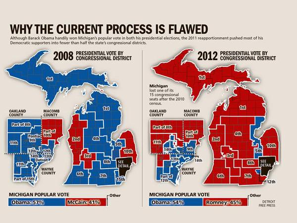

Gerrymandering
Gerrymandering, in U.S. politics, drawing the boundaries of electoral districts in a way that gives one party an unfair advantage over its rivals. The term is derived from the name of Governor Elbridge Gerry of Massachusetts, whose administration enacted a law in 1812 defining new state senatorial districts. The law consolidated the Federalist Party vote in a few districts and thus gave disproportionate representation to Democratic-Republicans.
Drawing political boundaries to give your party a numeric advantage over an opposing party -- is a difficult process to explain. Suppose we have a very tiny state of fifty people. Thirty of them belong to the Blue Party, and 20 belong to the Red Party. And just our luck, they all live in a nice even grid with the Blues on one side of the state and the Reds on the other. Now, let's say we need to divide this state into five districts. Each district will send one representative to the House to represent the people. Ideally, we want the representation to be proportional: if 60 percent of our residents are Blue and 40 percent are Red, those five seats should be divvied up the same way.
Fortunately, because our citizens live in a neatly ordered grid, it's easy to draw five lengthy districts -- two for the Reds , and three for the Blues. Now, let's say instead that the Blue Party controls the state government, and they get to decide how the lines are drawn. Rather than draw districts vertically they draw them horizontally, so that in each district there are six Blues and four Reds. With a comfortable Blue majority in this state, each district elects a blue candidate to the House. The Blues win 5 seats and the Reds don't get a single one.
Finally, what if the Red Party controls the state government? The Reds know they're at a numeric disadvantage.But with some creative boundary drawing they can slice the Blue population up such that they only get a majority in two districts. So despite making up 40 percent of the population, the Reds win 60 percent of the seats.